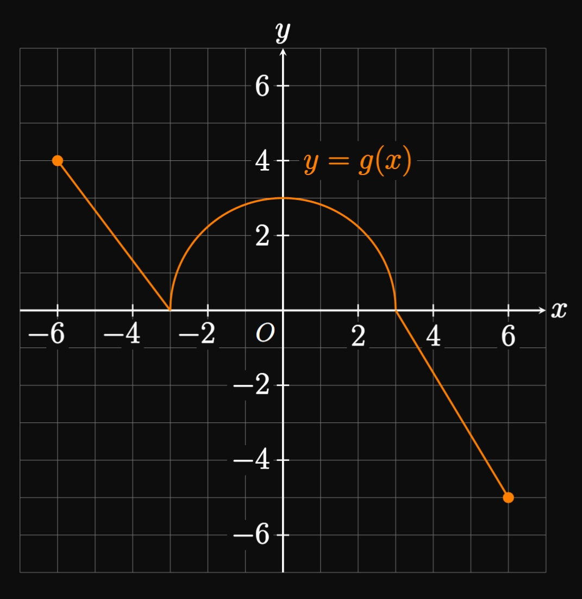

The rate at which cars enter a highway is given by the function
\(h(t),\) where \(t\) measures time in minutes since noon.
Interpret the following statements.
Water is pumped out of a pool at a rate given by \(f(t),\)
where \(f(t)\) is measured in liters per minute and \(t\) is measured in minutes.
Interpret the following expressions.

The graph of \(y = g(x)\) consists of line segments for \(-6 \leq x \leq -3\) and \(3 \leq x \leq 6.\)
For \(-3 \leq x \leq 3,\) the graph consists of a semicircle of radius \(3,\)
as shown by Figure 15.
Calculate the following integrals.
Walkthrough of Evaluating Definite Integrals
Let's compute the definite integral \(\int_0^4 2x \di x\)
by evaluating the limit of a right Riemann sum of equal widths.
For a right Riemann sum whose rectangles have equal widths,
we use the formula
\[\int_a^b f(x) \di x = \lim_{n \to \infty} \sum_{i = 1}^n f(x_i) \Delta x \cma\]
where \(x_i = a + i \Delta x\) and \(\Delta x = (b - a)/n.\)
Comparing this form to \(\int_0^4 2x \di x\) shows
\(a = 0,\) \(b = 4,\) and \(f(x) = 2x.\)
Find expressions for \(x_i\) and \(\Delta x.\)
In terms of \(i\) and \(n,\)
determine an expression for \(f(x_i) \Delta x.\)
Simplify the limit in part (a) to show that
\[\int_0^4 2x \di x = \lim_{n \to \infty} \frac{32}{n^2} \sum_{i = 1}^n i \pd\]
Use the formula
\[\sum_{i = 1}^n i = \frac{n(n + 1)}{2}\]
to convert the sum in part (c) to an algebraic expression.
Evaluate the corresponding limit.
For each of exercises 7–18, evaluate the definite integral
by using geometry and integral properties.
The following table gives values of \(f(x)\) for selected \(x.\)
Use a left Riemann sum with the four subintervals provided to estimate \(\int_0^8 f(x) \di x.\)
A car travels with speed \(v(t),\)
where \(v(t)\) is measured in meters per second and \(t\) is measured in seconds.
A speedometer's readings are recorded every few seconds, as shown by the following table.
Using a right Riemann sum, estimate the distance the car travels in the first \(10\) seconds.
A generator outputs power with time as modeled by the function \(P(t),\)
where \(P(t)\) is measured in watts per hour and \(t\) is measured in hours
since \(8\) am.
The power output was measured four times throughout the morning,
as given by the following table.
Using a left Riemann sum, estimate the energy the generator delivered
from \(8\) am to \(2\) pm.
\(t\)
\(1\)
\(3\)
\(5\)
\(6\)
\(P(t)\)
\(400\)
\(370\)
\(480\)
\(440\)
For each of exercises 24–27, rewrite the limit as a definite integral over the provided interval.
For the graph of \(y = f(x)\) in Figure 16,
rank the following quantities from greatest to least:
\(\int_0^1 f(x) \di x,\) \(\int_0^3 f(x) \di x,\)
\(\int_3^4 f(x) \di x.\)